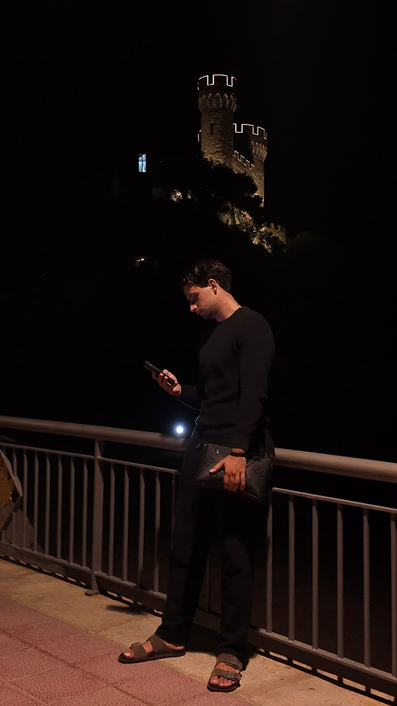

Reescribe tu Guion es la formación de Mario Valentino Pavel para dejar de improvisar la vida de otro y empezar a dirigir la tuya: marketing que te hace visible, conciencia que te hace ver el papel que actúas y mentalidad que sostiene el cambio cuando la motivación se acaba.
Un método en 3 actos. Sin florituras. Sin más excusas.
Vídeo gratuito de Mario donde te cuenta en qué consiste exactamente la formación, qué vas a aprender en cada acto y para quién es esto — y para quién no lo es.
Nota para Mario: sustituye el bloque .video-frame por el iframe de tu vídeo real (YouTube o Vimeo) — el comentario en el código marca dónde va.
Como en cualquier buen guion, ningún acto funciona solo. Marketing te hace visible, conciencia te hace ver el papel que llevas actuando, y mentalidad es lo que hace que el cambio se quede. En ese orden — o no hay historia. Toca cada acto para leerlo entero.
Tu talento sin visibilidad es un guion que nadie llega a leer.
Aprendes a construir una presencia que trabaja por ti mientras duermes: contenido, oferta y posicionamiento — no trucos sueltos, un sistema completo que conecta con el Acto II.
No puedes reescribir un guion que ni siquiera sabes que estás leyendo.
Identificas los patrones, las creencias heredadas y los diálogos automáticos que te han mantenido en el mismo personaje durante años — la visibilidad del Acto I sin esto es maquillaje.
Sin mentalidad, el marketing es maquillaje y la conciencia es solo teoría.
Instalas los hábitos, el criterio y la disciplina que hacen que el cambio no dependa de la motivación del lunes — donde los actos I y II se quedan, por fin, para siempre.

No te voy a vender una vida perfecta ni un guion sin tachones. Reescribe tu Guion es el método que uso con la gente que entreno: primero se les ve (marketing), luego se ven a sí mismos (conciencia) y por último se sostienen (mentalidad).
Si has llegado hasta aquí es porque una parte de ti ya sabe que el papel que llevas actuando no es el que querías. La otra parte lo vas a decidir tú, ahora, en el test de abajo.
— M. V. P.
Tu nombre y apellidos.
Aquí te enviaremos la clase gratuita y la confirmación.
Es el número con el que Mario hablará contigo.
Un par de líneas para que Mario llegue con contexto a la llamada.
Ahora toca escribir una vida que merezca ser vivida. Pulsa abajo para mandarle a Mario tus respuestas por WhatsApp y seguir la conversación ahí.
Hablar con Mario por WhatsApp →Se abrirá WhatsApp con tus respuestas ya escritas — solo tienes que pulsar enviar.